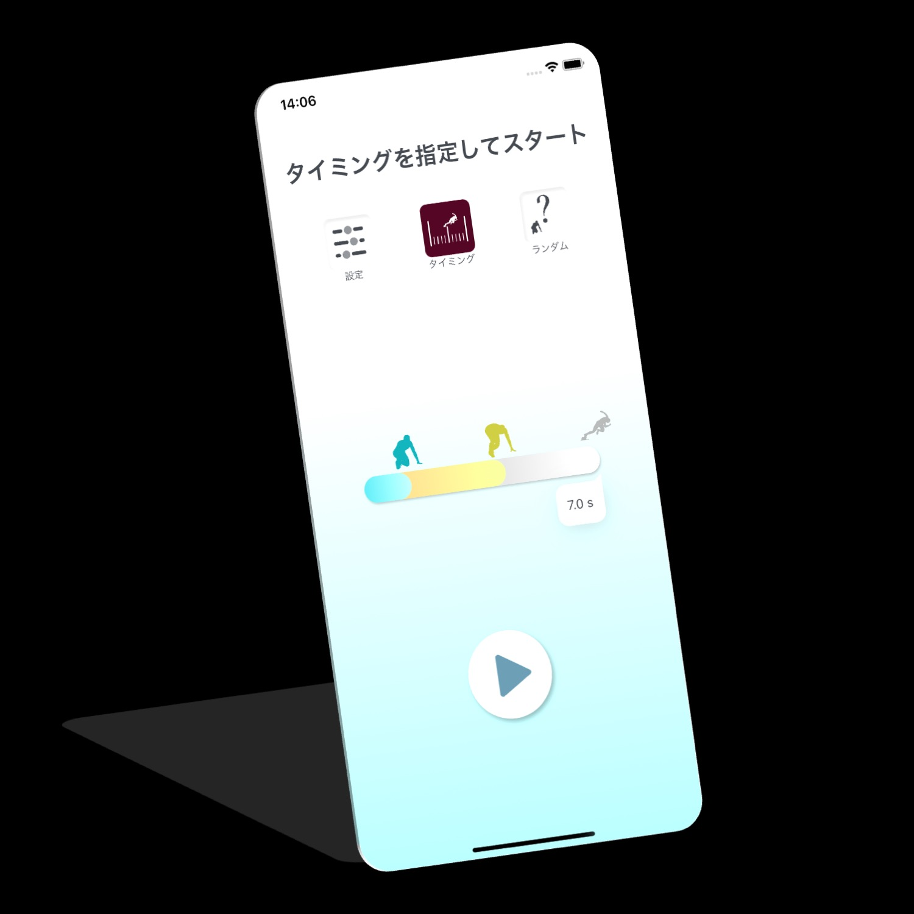
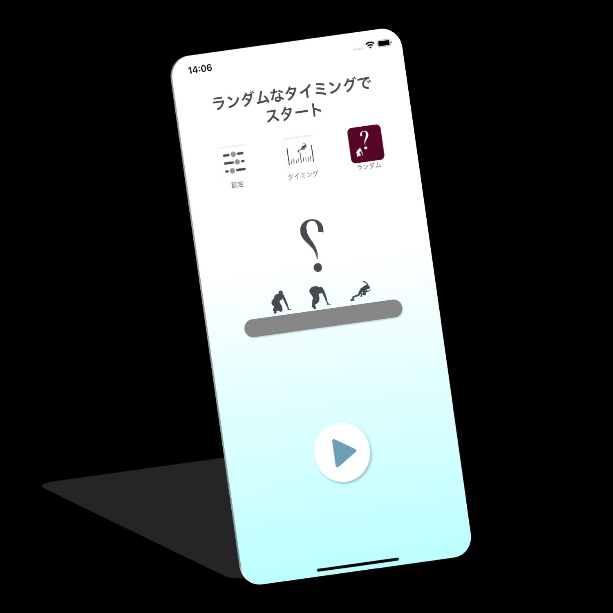
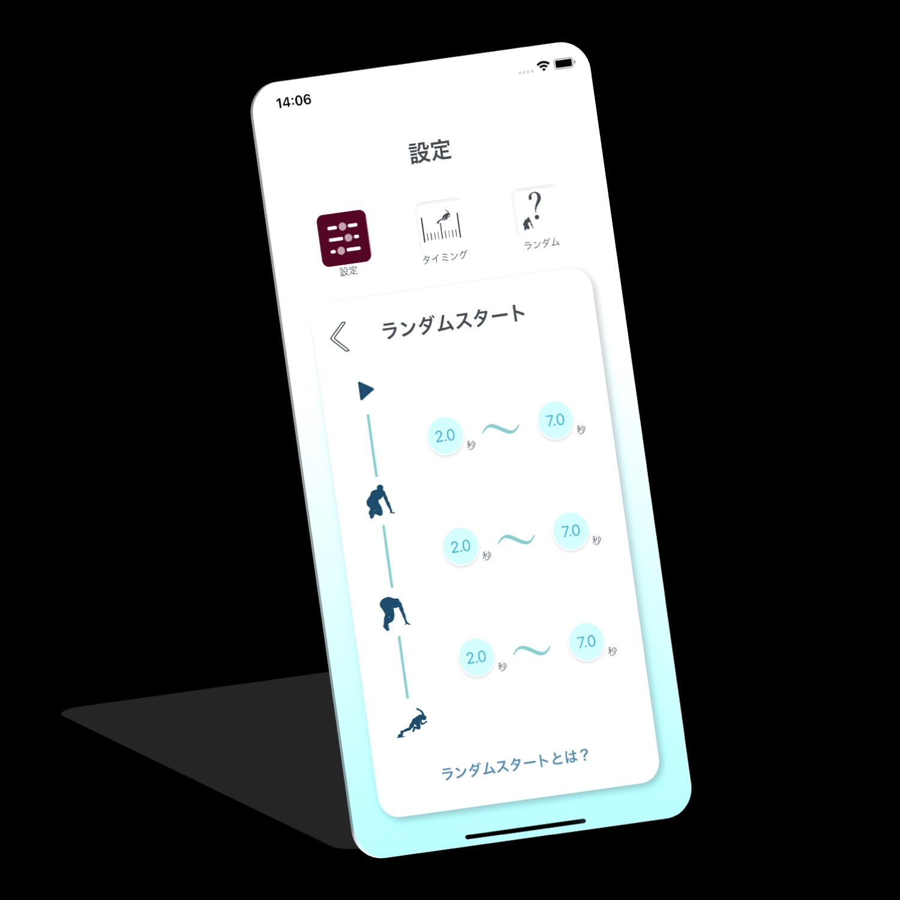
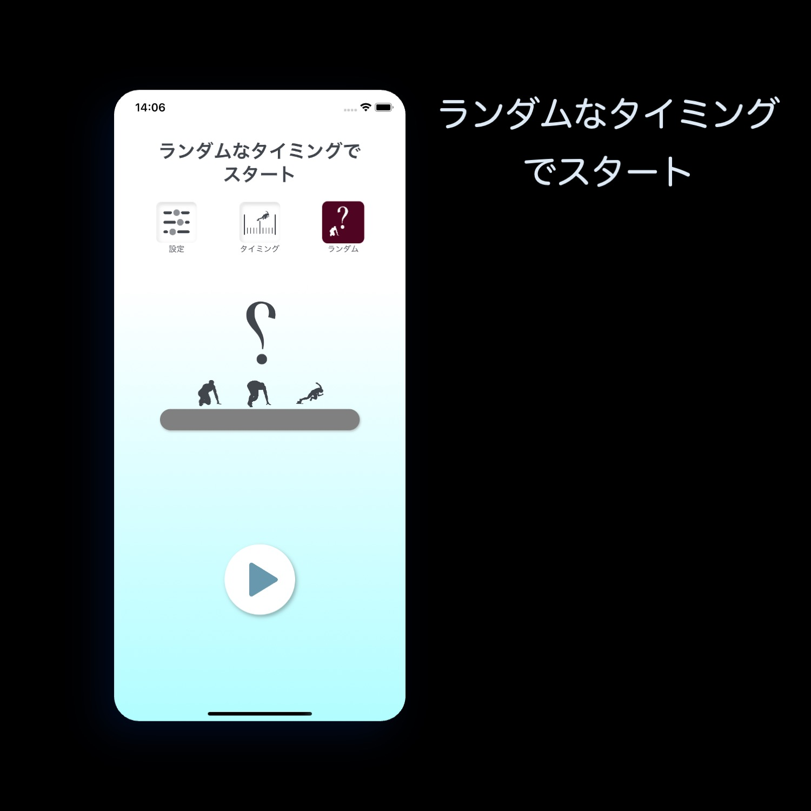

スタート音をカスタマイズ
「On Your Marks」「Set」「ピストル音」それぞれの間隔を設定し、目的に合うスタートシーケンスを作れます。
短距離選手・コーチのためのスタート練習
「On Your Marks」「Set」「ピストル音」をiPhoneから再生。タイミングを細かく設定した練習も、予測できないランダムスタートも、1人からチームまで手軽に行えます。
累計2.1万ダウンロード2026年9月20日現在
App Storeで見る
主な機能
「On Your Marks」「Set」「ピストル音」それぞれの間隔を設定し、目的に合うスタートシーケンスを作れます。
各合図の間隔をランダム化。ピストル音のタイミングを予測しにくい、実戦的な反応練習ができます。
スタート時の反応時間を計測し、トレーニングの振り返りと改善に活用できます。
スタート動作を撮影して見返せるため、フォームや音への反応を視覚的に確認できます。
アプリ画面




すぐわかる回答
短距離走のスタート練習とリアクションタイム向上のためのiPhoneアプリです。1人での練習、チーム練習、コーチングに利用できます。
はい。「On Your Marks」「Set」「ピストル音」の間隔を設定でき、各間隔をランダムにすることもできます。
はい。スタート時の反応時間を計測し、練習ごとの振り返りに活用できます。
はい。スタートの動きを動画で撮影し、フォームや反応を見返せます。
開発者
医師・ランナーとして活動しながらiOSアプリを開発しています。スターターキットは、短距離選手が大がかりな設備なしでスタート練習を行えるように開発しました。